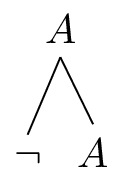
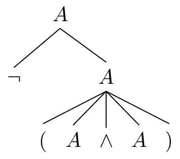
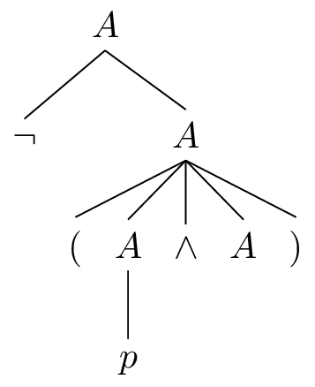
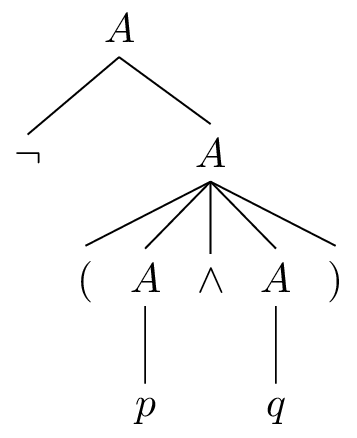
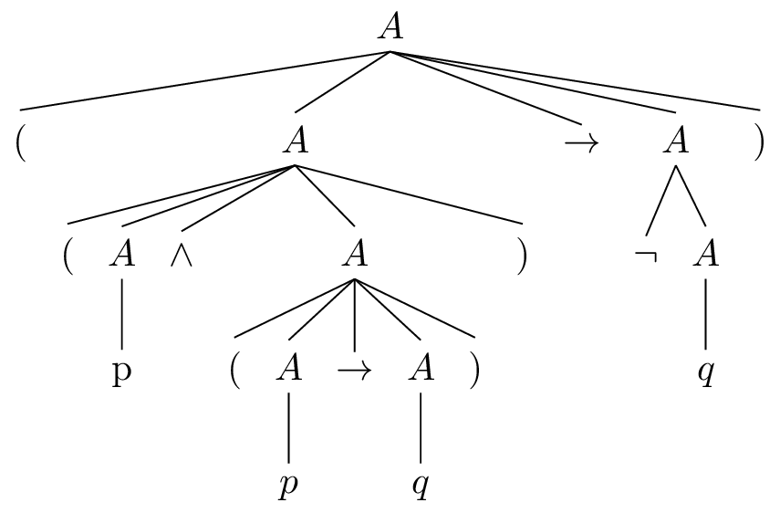
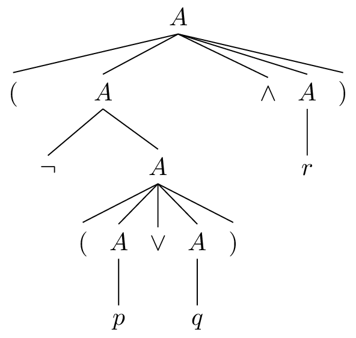
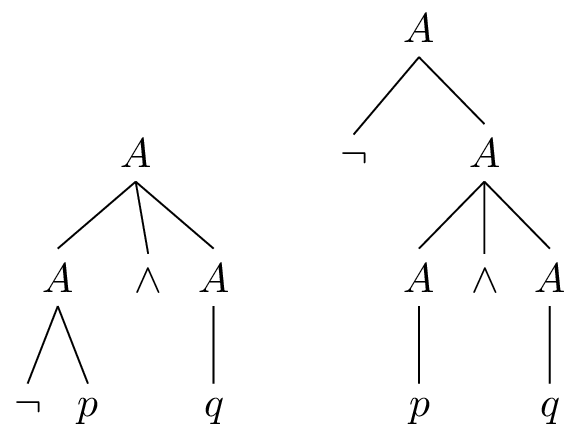

In {{< chapter_ref chapter=“logic-and-ai” id=“logical-systems”>}} Chapter 1. Logic and AI{{< /chapter_ref >}} and {{< chapter_ref chapter=“valid-inference” id=“formalization”>}} Chapter 2. Valid inference{{< /chapter_ref >}}, we introduced the idea of a formal language as a way of introducing mathematical precision to our approach to valid inference.
In this chapter, you’ll learn the nitty-gritty of how formal languages are defined mathematically, and we’ll look at some of the many applications of formal languages in AI and beyond.
We’ll be discussing the following:
What is a [formal language] and how does it differ from a natural one?
We give a mathematical definition of formal languages via alphabets and grammars.
Once this definition is sufficiently clear, we’ll move to:
We conclude with some applications.
English, St̓át̓imcets and Ripuarian are examples of natural languages. Python, propositional logic and algebraic chess notation are examples of formal languages. What makes a language a natural language and what makes it a formal one?
We all speak at least one natural language and many of us speak multiple. A natural language is a naturally evolved system that you learn spontaneously, for instance by interacting with your parents and other people around you when you are very young. Native speakers of English, St̓át̓imcets or Ripuarian didn’t learn their native language at school or by studying grammar books, but simply by being in an environment where the language was used. Because natural languages are acquired in this way, they are also very susceptible to change. They constantly evolve, just by being used and passed on to next generations.
In contrast, nobody learns python, propositional logic or algebraic chess notation simply by interacting with their parents. Also, these languages clearly didn’t evolve naturally and while the conventions of these languages may change over time, they do not do so spontaneously, but rather because a community of users explicitly decides to make a certain change.
Having command of a natural language is an extremely powerful thing. It allows you to communicate to others about your desires, your thoughts, your observations, your plans. It allows you to learn things in school, to teach other people what you have learned, to enjoy art in the form of literature, poetry and song lyrics, to laugh at jokes, to persuade others to change their actions, etc. etc.
Most of the recent advances in AI make use of the fact that natural language is such a pervasive part of our lives. Because language is everywhere, it creates an enormous wealth of data about many facets of human existence and human cognition, ready as input for machine learning. Given this, why don’t we just use natural language for everything in AI? What do we need formal languages for?
There are many different reasons formal languages are important in general and for AI in particular. One reason that is relatively quick to appreciate is that powerful large language models trained on natural language are developed using programming languages, which are formal languages. We cannot construct a neural network using natural language. So even sub-symbolic approaches to AI rely on formalisms that have symbolic roots. More generally, however, natural languages have some properties that make them unsuitable for doing logic or maths and, equally importantly, that make them unsuitable for storing human knowledge. Two such properties stand out:
Natural languages are ambiguous: Statements formulated in a natural language can often be interpreted in multiple ways. As a consequence, if we choose to use natural language as a basis for drawing inferences, we can’t always be sure that rules or facts that we want would want an AI system to benefit from are understood in the appropriate way.
Natural languages are over-expressive: Specific statements made in a natural language tend to describe highly specific thoughts. This makes natural language unsuitable for studying generalities in valid inference.
Let us illustrate both these properties in more detail:
Imagine that we want to build an AI system that gives out safety advice on eating foraged mushrooms. We have access to a lot of expert knowledge about mushrooms. One idea could be to feed this knowledge to the AI system in the form of natural language statements. For instance, we could give the system lots of English language sentences that together make up all our knowledge. Say, these sentences include the following:
S1 = If a mushroom has red spots and gills, then it is not poisonous.
Also, we prompt the AI system with another English language sentence:
S2 = The mushroom in front of me has red spots and gills.
It may seem straightforward how the AI system can prepare an advice on the basis of the knowledge captured in S1 and the information in the user prompt S2. We may think that all the AI system needs to do is recognise that it can apply modus ponens. From “If the door is open, you can come in” and “The door is open”, you can infer that you can come in. Completely parallel then, you would expect that from the two statements above the AI system should infer that the mushroom in question is not poisonous.
The problem, however, is that “X has red spots and gills” is ambiguous. It could either mean that X has red spots and red gills, or it could state that it has red spots and that it has gills (of whatever colour). Because of this we cannot be sure what either of these statements are saying exactly. It is not clear what the rule is that S1 is intended to capture, nor is it clear what observation the user is describing with S2. And because of all that uncertainty, we cannot be sure whether modus ponens applies. For instance, perhaps S1 is intended to mean that mushrooms that have red spots and red gills are not poisonous, while S2 is intended to mean that the mushroom in question has gills (gray ones, in fact) and red spots. In that case, modus ponens would not apply. In other words, if our AI system accidentally interprets these sentences not as they were intended, it could end up applying modus ponens and cause the users to poison themselves.
A similar problem concerns the words “if” and “then” in languages like English. Say, I remove the ambiguity in S1 above and instead state that:
S1′ = If a mushroom has red spots and red gills, then it is not poisonous.
It is now clear what this means. It tells us what is the case when a mushroom has the features that are mentioned. Does this tell us anything about mushrooms that do not have red spots and red gills? For most people, the intuition is that it does not: on the basis of just S1′ I cannot conclude anything about a mushroom with black gills and no spots. The problem, however, is that “if” and “then” are not always understood in this way. Imagine yourself saying S3 to a child:
S3 = If you behave well, I will buy you an ice-cream.
This clearly tells the child, via modus ponens, what happens when they are well-behaved. However, in this case the statement also seems to be saying what happens when they do not behave well. S3 seems to clearly suggest that if the child does not behave well, then there won’t be any icecream. So, “if” and “then” are interpreted differently in different examples. This simple observation has profound consequences for AI. If we feed the AI system our knowledge in the form of a long list of English sentences of the form “If X, then Y”, then how does the AI system decide which of these to interpret the way we interpreted S1′ and which to interpret parallel to our understanding of S3? Once more, the use of a natural language complicates the storing of knowledge, since a single natural language sentence often come with more than one interpretation.
Ambiguity is extremely common. Whenever we want represent knowledge and rules precisely, we should avoid the inherent ambiguity of natural language. Formal languages allow us to do just that. Let us now turn to a second reason why we choose formal over natural languages.
To illustrate the problem of over-expressiveness, let us look at another case of modus ponens:
M = If an object is placed in a normal cardboard box and subsequently nothing happens to that box, then the object will still be in the box.
Say a magician places a rabbit in a cardboard box and they close the box. After a short while they open it again and show the audience that the box is empty. The audience gasps. Why? Because on the basis of a common assumption like M and modus ponens, the audience expects the box to contain the rabbit. An object was placed in what looks like a normal box, we didn’t see anything happening to the box, so we infer via modus ponens that the object is still in the box.
Members of the audience now need to somehow reconcile the empty box with what they saw. They have a number of options. It looked like the box was a normal box, but perhaps it wasn’t. Perhaps there is some trick that lets the rabbit escape from the box unseen by the audience. In that case, this is not a normal box and modus ponens would not allow us to conclude that the rabbit is still in the box. Similarly, the audience didn’t see anything happen to the box, but perhaps the magician managed to distract his audience and perhaps he removed the rabbit in a way we couldn’t see. Once more, modus ponens does not apply and we do not end up inferring that the rabbit is in the box. Another possibility is that the rabbit is still in the box. That is, we were right to apply modus ponens, but we are wrong in our observation that the rabbit is gone. (Perhaps the magician isn’t showing us all of the box?) Finally, and most interestingly, perhaps some people in the audience take this failure of modus ponens as evidence that M must be false. In other words, these people believe in magic.
Now, compare this story to the following statement:
M′: If you multiply an number with another number and both these numbers are odd, then the result will also be odd.
Say now I calculate a × b = c and both a and b are odd. I observe that c is an even number, then there’s a few options again. Perhaps I was wrong to believe that a × b = c, or perhaps I was wrong to believe that a and b are both odd. Or perhaps my observation that c is even was wrong. An arrogant person may perhaps even believe that their maths book is wrong in stating M′.
In any case, both the case of magic and the case of odd number multiplication show that modus ponens is a very strong inference. As soon as we have all the ingredients for modus ponens, we cannot help but draw the conclusion. And if that conclusion is not in line with what we observe, we start questioning our assumptions and our conclusion.
The two stories also show that modus ponens is a very general inference. It exists completely independent of subject matter. Structurally, the story above about M is completely parallel to that of M′. This is where the over-expressiveness of natural language comes in. We can use natural language to express individual cases where modus ponens applies, as we just did above. But because natural language is so good at talking about specific details of situations, it is very bad at abstracting away. M and M′ are highly specific examples of premises that with the right further premise bring us in a situation where we can apply modus ponens. To be able to talk about modus ponens as a general principle of valid inference, we would need to let go of the specifics in these examples and state the principle using an abstract formal language.
In the formal language of propositional logic, the two stories can be captured in a single schema:
A → B, A ⊨ B
| A → B | M | M′ |
| A | an object was placed in a normal box and subsequently nothing happened to the box | two numbers were multiplied and both numbers were odd |
| B | the box is still empty | the result is odd |
In both cases above, we thought A → B was the case, as was A. But in both cases, we thought B was not the case. Given that this clashes with modus ponens we start questioning our assumptions. Either something is wrong with our assumption A or A → B, or something is wrong with our belief that B is false. Logic allows us to do make such reasoning very explicit and very general. By using a formal language we can focus on the pattern underlying our mechanisms of valid inference.
In other words, when we study valid inference, we often do not care about the specific content of the statements our inferences are built on. It would be extremely hard to define a notion like modus ponens using just a natural language. The abstraction offered by a formal language makes it possible to make explicit what all inferences that are to be classified as such have in common.
More generally, when we study systems of valid inference, we are often looking to find out what the consequences are of our assumptions about logical laws. If we only had natural language to study this, which sentences should we use then? Should these be about mushrooms, rabbits, numbers, or ice creams? Similar considerations apply to mathematics. Highly abstract formal languages allow us to focus on the important things. We all learn that we can simplify a quadratic equations like x2 + 5x + 6 = 0 to (x+3)(x+2) = 0, which means that x is either -3 or -2. Just imagine doing this without the use of abstract symbols like x!
In logical theory, the main role of formal languages is to provide a model of logical form. As foreshadowed in {{< chapter_ref chapter=“valid-inference” id=“formalization”>}} Chapter 2. Valid inference{{< /chapter_ref >}}, validity doesn’t depend on the concrete words or sentences involved. All of the below inferences are valid:
BERT is either my favorite dog or an LLM, and BERT not an LLM. So, BERT is my favorite dog.
Given that Ada is either on the Philosopher’s Walk or in the study, and she’s not in the study, she therefore must be on the Philosopher’s Walk.
Either Johannes or Data is teaching this class and Data is not teaching it. So, Johannes is teaching the class.
It’s easy to recognize the pattern and generate more examples of valid inferences like this. If we let A and B be arbitrary sentences, then the pattern is: A or B, not B ⊨ A. This is the logical form of inferences 1.-3., which, by the way, is known as disjunctive syllogism. Using a formal language, we have overcome the problem of over-expressiveness: we can express this type of valid inference in a single formula.
From this perspective, formal languages are the result of introducing placeholders for the logically irrelevant parts of language and special symbols, so-called logical constants for the logically relevant parts of language. In the case of disjunctive syllogism, for example, the relevant formal language will use so-called sentence letters (p, q, r, …) to stand for arbitrary sentences, and propositional connectives for the logically relevant grammatical conjunctions (¬ for “not”, ∧ for “and”, ∨ for “or”, → for “if …, then …”, …). We get something like the following as the model for the shared logical form of inferences 1.-3.
p ∨ q, ¬p ⊨ q
The resulting logical system, known as propositional logic, then, investigates the validity of these formal inferences. Crucially, in that system each statement that can be expressed in not only entirely abstract, it is also unambiguous. In other words, each statement corresponds to a unique logical form.
Note that what’s happening here is very much in line with the picture from {{< chapter_ref chapter=“logic-and-ai” id=“logical-systems”>}} Chapter 1. Logic and AI{{< /chapter_ref >}}, where we described logical systems as mathematical models of valid inference. Mathematical models, remember, are characterized by abstraction, idealization, and assumptions. Here it is easy to see, for example, where the abstraction lies: we’re abstracting away from logically irrelevant features of language, such as which concrete sentence is involved. A good example of idealization is that we’re writing a single logical constant, e.g. ∧, for the many different ways to express conjunction in natural language: “and”, “as well as”, “together with”, …
From the perspective of logical theory, the main advantage of developing mathematical models of language and, more concretely, logical form is that it allows us to investigate valid inference with mathematical rigor, permitting us to establish (meta-)logical facts beyond any reasonable doubt. But in this course, we take a slightly more pragmatic perspective at formal languages as a logical tool.
For us, formal languages solve a fundamental problem for AI: How can we store knowledge in such a way that we can communicate it to computational models of intelligent behavior (computers)? Formal languages solve this problem because given their deterministic, mathematical nature, it is relatively easy to teach them to computers. In fact, a fundamental insight from computer science is that programming langauges are, for all intents and purposes, formal languages.
Moreover, for us as students of AI, it is important to note that database languages, which are used to create and search databases, ontology languages, which are used to create representations of factual knowledge of the world, and so on all are formal languages. In short, in knowledge representation, logical methods reign supreme.
So far, you only had a glimpse of what a formal language looks like. We have not specified one formally yet. Before we can go ahead and give the mathematical definition of what a formal language is, we need to talk a bit more about sets. Formal languages are sets. So, we need to know what a set is before we can talk about formal languages.
In {{< chapter_ref chapter=“valid-inference” id=“semantic-methods-for-deduction” >}} 2.3.1 {{< /chapter_ref >}}, you first encountered sets. We now delve a bit more into elementary set theory, the basic theory of sets.
A set is the simplest kind of collection of objects. All that matters to a set is which things are in it and which things are not. If some object x is in a set, we say that x is one of its elements or members. Elements of a set are also said to belong to the set or to be contained in the set. Beyond membership, nothing matters to a set. For instance, there is no order to the elements in a set and an object is either in the set or not - it cannot be in a set multiple times.
A set may contain any kind of object: numbers, symbols, people, or even other sets. For X a set and x an object, we write x ∈ X to say that x is an element of X and we write x ∉ X to say that x is not an element of X. If we have many objects x1, …, xn, then we also write x1, …, xn ∈ X to say that x1 ∈ X, and x2 ∈ X, and x3 ∈ X, …, and xn ∈ X.
If the elements of a set are precisely a1, …, an, then we can denote the set by {a1, …, an}. This is called an extensional definition of the set. So, the set {1, a, {Robbie, 0}}, for example, contains precisely the number 1, the symbol a, and the set {Robbie, 0}, which in turn contains Robbie and the number 0 as elements.
For most interesting sets, however, we cannot give an extensional definition. One reason for this could be that we may not know exactly what the elements are. For instance, if the elements of a set are precisely the objects satisfying condition Φ, then we can denote the set by {x : Φ(x)}. This is called a definition by set abstraction. For example, if I have the quadratic equation x2 + 5x + 6 = 0, then we can express the set of solutions to this equation as:
{x : x2 + 5x + 6 = 0}
In other words, we have a way of expressing the solutions, even if we do not yet know what they are. (It turns out that this abstracted set is equal to the extensional set { − 3, − 2}.)
Another reason why non-extensional definitions are handy is because many of the kinds of sets we want to study are typically infinite. For example, {x : x is a prime number} is the set that contains all and only the prime numbers. So we have that 3 ∈ {x : x is a prime number} but 4 ∉ {x : x is a prime number}. Obviously, we could write such things down using an extensional definition of the set of prime numbers.
Most formal languages that we will encounter will be infinite sets. So what exactly is a formal language? Put simply, a formal language is a set of sequences of symbols. Symbols are the building blocks of a formal language. A formal language starts with the specification of what these building blocks are. We call this an alphabet, which is just a set of symbols. Using the alphabet, we then use a grammar to construct the set of sequences, i.e. the formal language.
Sequences of symbols are recruited from an alphabet. We usually write Σ to denote the alphabet of a language.
It’s important to note that the alphabet can be any set. So, e.g.,
Σ = {0, 1, 2, 3, 4, 5, 6, 7, 8, 9}
is a perfectly fine alphabet. You can use it to define the language for all the natural numbers. One way to do that is to use an operation called the Kleene star, named after the American mathematician Stephen Kleene and written as an asterix. The set Σ* is the set of all sequences that you can build with the elements of Σ. This set is a formal language and it includes sequences such as 15935304888 and 249583 and 2. This is not the set of what we normally consider to be natural numbers, though, since Σ* will also include sequences like 0, 000000001 and 000881, which are not natural numbers (in the Western Arabic decimal system, at least). So, while the Kleene star gives us a way to construct the set of all sequences made from an alphabet, most formal languages we are interested in will be a specific smaller subset of Σ*. This is why we need a grammar.
The grammar of a language determines which sequences of symbols from Σ are valid expressions of the language.
In the case of most formal languages in logic, grammars use a technique known as inductive definition. Here is an example of such a definition for the set of all numbers built from Σ.
Here’s how this definition works: In the first step we get all the natural numbers that can be written as a single digit. This is the whole alphabet with the exception of 0, which isn’t a natural number. Then in the second step we can represent numbers that correspond to sequences of any length > 1. For instance, this definition shows that 120 is a natural number: (i) 1 is a natural number (step 1); (ii) 12 is a natural number (step 2); (iii) 120 is a natural number (step 2). Using this inductive definition, there is no way to show that 01 is a natural number. Given the final line of the definition, we must conclude that it is therefore not a natural number.
(The driving force behind this definition is actually an application of modus ponens. One instance of step 2 in the definition is: If 1 is a natural number, then so is 12. Now, since step 1 tells us that 1 is indeed a natural number it follows by modus ponens that 12 is also a natural number.)
Just like the language of numeral notation we saw above, logics are also sets of sequences of symbols. We often refer to these sequences as formulas, so a logic is a formal language consisting of formulas. In order to specify such a language, we will want to specify an alphabet and a grammar so that the formulas that make up the formal language are well-formed sequences that are useful for the study of valid inference. Here, we will define the language used for propositional logic.
Starting with the alphabet, we should first note that, in logic, not all elements of the alphabet play the same role. (Similarly, in the case of the language of numbers we saw that 0 played a different role than the other digits). For propositional logic, the alphabet consists of three kinds of things:
An example of an alphabet for the language of propositional logic is:
ΣP = {p1, …, pn, ¬,∧,∨,→,↔︎,(,)}
Here, p1, …pn are the variables, ¬, ∧, ∨, →, ↔︎ are the operators, and ( and ) are the auxiliaries.
The Kleene star of this set, ΣP* provides us with all the sequences that we can build using these symbols. ΣP* contains meaningful expressions like:
((p1∧p3)→¬p2)
but also lots of expressions that are not well-formed for propositional logic, like:
)p1¬ ∧ ((→
So, we should give an inductive definition for the language of propositional logic, which we will call ℒ:
p1, …, pn ∈ ℒ and
if A ∈ ℒ, then ¬A ∈ ℒ as well as
if A, B ∈ ℒ, then (A∧B), (A∨B), (A→B), (A↔︎B) ∈ ℒ
As before, crucially, we assume in addition that nothing else is in ℒ, but from now on, we will leave this “closure condition” implicit. In other words, we assume that if something complies with the above statements, then it is indeed in ℒ, but if it does not, then it is not.
We can now easily see that ((p1∧p2)→¬p3)) is a member of ℒ. To see this, we simply perform the construction:
But we can also see that ¬A¬ is not a formula, since no rule every allows for ¬ to occur in a formula without being followed by formula.
In computer science and AI, there is a wide-spread notation that significantly simplifies the above rules: the so-called Backus-Naur Form (BNF). In BNF, instead of all of the above, we can simply write the following to define the same language ℒ:
A : := pi ∣ ¬A ∣ (A∧A) ∣ (A∨A) ∣ (A→A) ∣ (A↔︎A)
Here, we read the “∣” as an “or”. And so this reads: a formula is either a propositional variable, or the negation of a formula, or the conjunction of two formulas, or ….
You should know that BNFs sometimes take different forms. Here is an equivalent way of giving the BNF for the same language:
⟨prop⟩ ↦ p1 ∣ … ∣ pn
⟨fml⟩ ↦ ⟨prop⟩ ∣ ¬⟨fml⟩ ∣ (⟨fml⟩∧⟨fml⟩) ∣ (⟨fml⟩∨⟨fml⟩)∣ (⟨fml⟩→⟨fml⟩) ∣ (⟨fml⟩↔︎⟨fml⟩)
but these are just notational differences.
BNFs are a powerful method for defining formal languages. They are frequently used in logic, computer science, and AI. For example, the syntax of most programming languages is defined in BNF, see, e.g., Python. Even if you want to know what a valid email really is, you need to look up its BNF.
Importantly, the BNF we provided above is just one example of a logic that we can define on the basis of ΣP. One obvious way in which logics can differ is in the choice and number of propositional variables. More interestingly, some logics will only use a subset of the operators. For instance, the language ℒ′, defined in the following way, is another example of a logical formal language.
A : := pi ∣ ¬A ∣ (A∧A)
In fact, it turns out that this language is equally expressive as the language ℒ above: everything that can be said using propositional variables and ¬,∧,∨,→,↔︎ can also be said using just ¬,∧. Seeing why is a topic for later in the course.
Translating natural language expressions into a formal language expression is a process known as formalization. It’s not always easy, but here are some examples for formalization with propositional languages:
| The letter isn’t in the left drawer | ⤳ | ¬p |
| It’s not the case that the letter is in the left drawer | ⤳ | ¬p |
| The letter is in the left and in the right drawer | ⤳ | (p∧q) |
| The letter is not in the left drawer, but it’s also not in the right one | ⤳ | (¬p∧¬q) |
| The letter is in the left or in the right drawer | ⤳ | (p∨q) |
| The letter is neither in the left nor in the right drawer | ⤳ | (¬p∧¬q) |
| If the letter is in the left drawer, then it’s not in the right drawer | ⤳ | (p→¬q) |
| The letter is in the left drawer, if it’s not in the right one | ⤳ | (¬q→p) |
| The letter is only in the left drawer, if it’s not in the right one | ⤳ | (p↔︎¬q) |
| The letter is in the left drawer just in case it’s not in the right one | ⤳ | (p↔︎¬q) |
More examples
At this point, you know enough about how logical grammars and BNFs work that you can check out your own examples. Here are some suggestions for grammars to check out:
Pick your favorite programming language (if you have one): Python we mentioned above, C is a popular low-level language, Prolog is a logic-based language.
A more complex AI example is description logic, which is a powerful KR language for designing knowledge bases.
The RFC for emails contains the BNF for valid email addresses. Check it out 🤓
So far, we’ve looked at how to define formulas by looking at how they are constructed from simpler formulas. Now, we’ll invert the perspective and desconstruct or parse formulas.
Why? you ask? Well, the reason we need to look into this is because that’s essentially what computers do to understand formulas. The idea of parsing is to split a formula according to the rules of the grammar to recover how it was constructed. By doing so we get insight into the syntactic structure of a formula.
Consider the following BNF for a propositional logic with just three propositional constants p, q and r:
A : := p ∣ q ∣ r ∣ ¬A ∣ (A∧A) ∣ (A∨A) ∣ (A→A) ∣ (A↔︎A)
Essentially, this is a collection of eight rules:
| r1: | A⇒ | p |
| r2: | A⇒ | q |
| r3: | A⇒ | r |
| r4: | A⇒ | ¬A |
| r5: | A⇒ | (A∧A) |
| r6: | A⇒ | (A∨A) |
| r7: | A⇒ | (A→A) |
| r8: | A⇒ | (A↔︎A) |
Rules like this are sometimes called rewrite rules. The intuition is that starting from the abstract ‘start’ symbol A, the rules allow you to rewrite A to any formula in the language. So, any formula in the language can be derived by applying a finite number of choices from these rules. For instance, to show that ¬(p∧q) is a formula in this language, we start with A and, using the rules above, we rewrite this A until we arrive at this formula. We can do this in four steps:
A ⇒r4¬A ⇒r5¬(A∧A) ⇒r1¬(p∧A) ⇒r2¬(p∧q)
To make this more insightful, we can turn this derivation into a so-called parse tree, which is a very useful representation of the syntax of a formula. A parse tree is a structure that is rooted in the abstract label A that forms the base of our BNF definition of the language. You can construct a tree by just following the derivation above, step by step. Each application of a rule introduces a new branching, until there is nothing left to do anymore. Here is how to construct the parse tree for the derivation we gave for ¬(p∧q). We start with a node A and then look at the derivation to see which rule to apply first. This is rule 4, which maps A to a new formula ¬A. For each new symbol we create a new branch:

Then, we apply rule 5 to the right-most branch. This rule rewrites this A into (A∧A), which creates five more branches:

Then, we apply rule 1 to A that is to the left of “∧”:

Finally, we apply rule 2:

This now is the parse tree corresponding to our derivation of ¬(p∧q). The leaves of the tree spell out the formula, each branching is an application of a rule from the BNF grammar.
Here is an example of a derivation for a more complicated formula:
A ⇒r7(A→A) ⇒r4(A→¬A) ⇒r2(A→¬q) ⇒r5((A∧A)→¬q)
⇒r1((p∧A)→¬q) ⇒r7((p∧(A→A))→¬q)
⇒r2((p∧(A→q))→¬q) ⇒r1((p∧(p→q))→¬q)
The corresponding parse tree looks like this:

Here is yet another example of a formula, a derivation for that formula and the parse tree for that derivation:
(¬(p∨q)∧r)
A⇒r5(A∧A)⇒r4(¬A∧A)⇒5(¬(A∨A)∧A)⇒r1(¬(p∨A)∧A)⇒r2(¬(p∨q)∧A)⇒r3(¬(p∨q)∧r)

For a computer it is essential to be capable of parsing a complex formula in this way. This is because the parse of a formula gives us access to the logical form. Say, that the propositions in this logical language are meant to give a medical system crucial information about a patient. For instance, p, q and r each correspond to the proposition that states that the patient has a certain symptom, call these symptoms P, Q and R, respectively. If we feed the system the formula ¬(p∨q) ∧ r, then we want the system to know that the patient is showing symptom R, but not showing P or Q. It needs to figure out that the sub-proposition (p∨q) are negated, while sub-proposition r is not. To do this, it needs to parse the formula correctly. From the parse, it is clear that the disjunction (p∨q) is negated, but that r escapes the effect of that negation.
Parsing allows us to distinguish seemingly similar, but crucially different logical forms like:
(¬(p∨q)∧r)
¬((p∨q)∧r)
((¬p∨q)∧r)
A fundamental insight of logical theory is that when a grammar is properly defined, we get what’s known as unique readability. A formula has this property when the grammar only provides a single parse tree for it. This is the case for the examples we gave above. For instance, for ((p∧(p→q))→¬q) we don’t have a choice in what rule to apply first when we start our derivation. We cannot for instance apply rule 4 before we apply rule 7. If we did, we would end up with a different formula. We do have some choices later in the derivation. For instance, after applying rule 4, we could have chosen to apply rule 5 to the A to the left of the →. But that is not a choice that affects the structure. The parse tree would remain the same. In other words, all derivations of this formula lead to the same tree.
Unique readability is of the utmost importance since if it fails, this means that formulas are ambiguous. Since we said that avoiding ambiguity is one of the motivations for the use of formal languages, this means that we need to take special care in designing our grammar. Take the following logic, for instance:
A: := p ∣ q ∣ ¬A ∣ A ∧ A
Using this grammar, we can derive ¬p ∧ q. Crucially, though, we can derive this in two distinct ways, corresponding to the following two parse trees.

Imagine we are building an AI system to regulate a train crossing. There is a light stopping traffic from crossing the railway when it turns red and similarly there is a light indicating the train should stop and wait with crossing the road until that light turns green. Let’s say we have trained a neural network to regulate things as efficiently as possible, minimizing train delays and traffic jams. Unfortunately, the neural network is not flawless. We need a rule-based system to make sure the decisions made by the network are safe. To do this, we translate the network’s decisions to statements in a propositional logic and compare these to rules that we want the system to obey. Let’s say that p means that the cars have a green light and q means that the train has a green light. We now want a rule that says that p and q cannot be true at the same time.
As the two parse trees above show us, we have no way of doing this. If we state the rule as ¬p ∧ q, we end up with something that could be misunderstood. The two trees correspond to two distinct derivations, which correspond to two different structures for the same formula. In turn this means that the formula will have two interpretations. On the right is the interpretation that would be handy for this AI system: cars and trains do not have a green light at the same time. But if the system instead adopts the structure on the left, we could end up with a system that demands that trains have a green light while cars do not. Ambiguity might just have created a huge traffic jam! This shows that the BNF above is unsuitable as a formal language, since it fails the property of unique readability. All this is why we need to be careful about the auxiliaries, like (,), which ultimately guarantee unique readability.
Parsing is an incredibly important subject in the foundations and practice of programming, natural language processing (NLP), and elsewhere. We don’t have time to go into the details, but think of programming for a second. A programming language is essentially a tool to write down instructions for a computer in a human-readable way. What happens “under the hood” is that the computer translates the program you write into machine instructions (the proverbial 1’s and 0’s).
To ensure that the machine instructions really correspond to what you had in mind when you wrote the program, the computer needs to understand what you meant. Since a computer is deterministic and not particularly intelligent, the only way it can do this is according to unambiguous instructions about what means what.
But clearly, we can’t just write for each program what it means in machine instructions-otherwise, what’s the point of having the language in the first place? Instead, we specify what the individual expressions of the language mean and how combining them according to the grammar affects that meaning. In this way, we guarantee that for each program we could possibly write, we can translate it into machine instructions.
But to do so, we need to know which expressions occur in which order in the program. To determine this is the role of the parser. This shows the fundamental importance of parsing in programming and human-computer interaction.
The development of large language models for generative AI has made a significant impact on applications of AI. Because the interaction with such models involves the medium of natural language, generative AI has a serious ambiguity problem. For that reason, it is crucial for applications that require precision that there are rule-based components that avoid the problems inherent to natural language.
So, let’s talk for a moment about the role of formal languages in AI applications. We’ve already talked about the fact that programming languages are essentially just formal languages. So we can use the theory of formal languages to understand this crucial aspect of human-machine interaction. Formal languages, however, solve the problem of how to communicate with computers in a much more general way. Their potential to avoid ambiguity means that formal languages are essential to applications that require precision. In the 80s and 90s of the previous century, this idea lead to the rise of so-called expert systems. These are systems where vast bodies of existing ‘expertise’ in a certain domain were translated into databases of formalised statements and rules, in order to solve complex problems concerning the domain in question. In such systems, there are so many rules and facts that it is impossible for the human expert to keep track of everything. The expert system, however, can generate unknown novel facts on the basis of a great many applications of modus ponens and other patterns of valid inference. Conversely, expert systems could be used to answer queries. This means that a user prompts the system with a certain proposition (standing for some statement in the domain of expertise) and the expert system would then search for a chain of inferences either leading to that proposition or to its negation. Ultimately then, the expert system can help the user understand whether something relevant to the domain of expertise is true or not, and also why that conclusion can be drawn.
Currently, the term ‘expert system’ is not used a lot anymore. However, rule-based systems are still very popular applications of formal languages in businesses. They are cheap to build and maintain, they are fast and reliable. As we hinted at above, they are also fully transparent, meaning that an expert system doesn’t just solve a complex problem, it can also provide a detailed explanation of how it came to the solution, since it can show you the rules and facts it used in order to reach it. This is in stark contrast to generative AI, which relies on untraceable statistical regularities in vast amounts of data. This lack of traceable reasoning makes the reliability of generative AI questionable, thereby raising question about its safe use. Even worse, it makes it less clear that AI can be held accountable for the decisions it makes.
An incredibly rich and extensive discussion of formal languages and their role in logic is:
From a linguistic perspective, a highly influential idea is Montague’s idea to understand “English as a formal language”:
Notes:
Here is a (non-exhaustive) list. Typically, we distinguish between:
Non-logical symbols
These symbols are typically the result of logical abstraction. But in knowledge representation contexts, they can also be the result of representing extra-logical information.
Propositional variables also known as sentence letters.
These stand for sentences, like “it is raining” or “logic is awesome”. When it doesn’t matter which sentences we’re talking about, they are often p, q, r, …. In knowledge representation (KR) contexts, they can also be mnemonic, like RAIN or AWESOME.
Constants.
These stand for proper names, like “Alan” or “Ada”. In logic, they are often a, b, c, …, but in KR-contexts, they can also be mnemonic, like alan or ada. Sometimes, they are just ordinary numerals, like 0, 1, 2, … or π.
Function symbols.
These stand for functional expressions, like “+” or “the father of”. In logic, often f, g, h, … and in KR often mnemonic, like FatherOf. In mathematical logic, function symbols like +,−,⋅,… are common, too.
Predicates.
They stand for … predicates, which are expressions that define properties or relationships, like “being blue” or “being greater than”. In logic, usually P, Q, R, … and in KR, also mnemonics, like BLUE or GREATER.
A special case is the identity symbol =, which some logicians treat as logical and some as non-logical. Otherwise, it works just like predicate.
NB: Function symbols and predicates come with an arity, which is how many arguments they take. In syntax specifications, we often write this as a superscript. So, for example, the fact that BLUE applies to one thing (it’s unary) would be written BLUE1.
Logical symbols
These are the result of idealization. Which logical symbols are available depends on the logical system. There symbols for many logically relevant concepts.
Variables.
These stand for arbitrary but concrete individuals or properties. They have a mainly logical function in the context of quantification, which we’ll cover more extensively later in the book.
They are typically x, y, z, … but sometimes α, β, δ, when we’re talking about individuals. And they are typically X, Y, Z, … when we’re talking about variables for properties.
Sentential operators.
These connect one or more sentences or phrases to form a new one. Typical examples are the classical propositional connectives:
| Symbol | Meaning | |
|---|---|---|
| ¬,∼ | not | |
| $\land,\\&$ | and | |
| ∨ | or | |
| →,⇒,⊃ | if …, then … | |
| ↔︎,⇔,≡ | iff | |
| ⋮ | ⋮ |
But many other operators are known and/or can be introduced:
| Symbol | Meaning | |
|---|---|---|
| ▫, ◊ | necessity, possibility | |
| K, B | knowledge, belief | |
| G, F, H, P | past, future | |
| P, O | permission, obligation | |
| ! | announcement | |
| ? | questions | |
| ⋮ | ⋮ |
Unfortunately, we won’t be able to cover most of these more advanced operators in detail.
The operators listed above are standard logical operators. But note that in programming languages, for example, we often have mnemonic conditionals, like in the following pseudocode, for example:
IF ... THEN
...
ELSE
...
END IFSimilarly, programming languages often have idiosyncratic notation for the classical propositional connectives (which are, of course, easier to type on ordinary keyboards), such as || for disjunction, $\\&\\&$ for conjunction in C, or simply and, or, not in Pyton.
Quantifiers.
These allow us to express claims about all (∀) or some (∃) things. More generally, quantifiers allow us to make generalizations. There are also specialized quantifiers, such as numeric quantifiers, like ∃3 which says “there are exactly 3”.
Auxiliaries.
Parsing
These are symbols that help the notation of the language. They are things like commas “,” or parentheses “(” and “)”. They don’t have a meaning themselves, but they help us to disambiguate formulas. They are important for parsing (see below).
These are, in any case, only examples of some common symbols in the alphabets of formal languages. Ultimately, the sky is the limit.
The formulas, then, are sequences of symbols from the alphabet. But not every sequence of symbols is a formula, formulas are constructed from the symbols according to rules.
The formal languages we use in logic and KR are usually rather simple in that they allow for uncomplicated grammars. The complex grammatical phenomena we often encounter in natural languages, for example, which are required for to capture all linguistic nuances (which are often logically irrelevant), we need more sophisticated grammas, like context-sensitive grammars.
Like much of logic, formal languages have a long history.1 The use of abstract sentence letters as in A and B to express logical form can already be found in Aristotle’s Organon. Leibniz’s characteristica universalis is perhaps the first attempt at defining a formal language in the modern sense. In mathematics, the rise of formal languages is associated with rise of logical rigor in the foundations of mathematics, culminating in logicist projects, such as Gottlob Frege’s Begriffsschrift.
One of the most important applications of formal languages is as a formalism that allows storing knowledge. This could be knowledge of any kind: facts about the world, facts about the clients and their orders of a major company, the location of objects in a space that a robot is navigating, etc.
Above we introduced a formal language for propositional logic as follows:
A : := pi ∣ ¬A ∣ (A∧A) ∣ (A∨A) ∣ (A→A) ∣ (A↔︎A)
We could use this for knowledge representation, but it will be easy to see that its applications will be rather limited. Say, we want to represent the knowledge we have about the location of three objects, A, B and C. We know that A is left of B and B is on left of C. How do we store that knowledge using propositional logic. Unfortunately, all we can do is something like this: First we state that p1 corresponds to A is left of B and that p2 corresponds to B is left of C. Then, we declare all our knowledge:
p1
p2
This is hardly useful. What we see here is that although propositional logic is unambiguous and really useful for stating general cases of valid inference, it is under-expressive for most applications that concern knowledge representation. Propositional logic can only represent propositions, things that are true or false. These propositions themselves have no aboutness and, in particular, there is no role in propositional logic for (representations of) objects in the world. In other words, we would like to have a formal language that not just state that certain things are true or false, but be explicit about what these propositions are about. In first order predicate logic, for instance, we can express the location of the objects A, B and C much more transparently:
left(A,B)
left(B,C)
Here, “left” is a predicate and it expresses a relation that holds of two entities. Additionally, using first order logic, we can express relations that hold in general. Consider, for instance, the following rule:
∀x∀y∀z[(left(x,y)∧left(y,z)→left(x,z)]
This rule states that if for any object x, for any object y and for any object z it holds that if x is to the left of y and y is to the left of z, then it follows that x is to the left of z. Using this rule and the two facts above, we can derive a new fact, namely that left(A,C).
First-order logic (FOL) is extremely important in logical theory and in AI applications. In part, this is because FOL has a lot of expressive power: a lot of claims—some would say everything—can be formalized in it.
Let us turn to defining FOL as a formal language. In general, the alphabet looks something like this:
{a, b, c, …, x, y, z, …, f, g, h, …, P, Q, R, …, ¬,∧,∨,→,↔︎,∀,∃,(,),,}
NB: There’s no typo at the end here 😃 The last symbol is a literal comma.
For a concrete language, we’d need to pick some suitable constants a, b, c, …, function symbols f, g, h, …, and predicates P, Q, R, …. Usually, in KR-contexts, these will be mnemonic, of course.
The full syntax of FOL, then, is:
⟨const⟩ : := a ∣ b ∣ … ⟨var⟩ : := x ∣ y ∣ … ⟨unop⟩ : := ¬ ⟨binop⟩ : := ∧ ∣ ∨ ∣ → ∣ ↔︎ ⟨quant⟩ : := ∀ ∣ ∃ ⟨funn⟩ : := fn ∣ gn ∣ … $$\langle term\rangle::= \langle const\rangle\mid\langle variable\rangle\mid \langle fun^n\rangle(\overbrace{\langle term\rangle,\dots,\langle term\rangle}^{n\text{ times}})$$ ⟨predn⟩ : := Pn ∣ Qn ∣ … $$\langle atom\rangle::= \langle pred^n\rangle(\underbrace{\langle term\rangle,\dots\langle term\rangle}_{n\text{ times}})$$ ⟨fml⟩ : := ⟨atom⟩ ∣ ⟨unop⟩⟨fml⟩ ∣ (⟨fml⟩⟨binop⟩⟨fml⟩) ∣ ⟨quant⟩⟨var⟩⟨fml⟩
As you can see, the syntax of FOL is significantly more complex than the syntax of propositional logic. But syntactically, nothing too complicated is going on. Assuming, for example, that FRIEND is a binary predicate and data a constant for data in our language, we can write:
∃xFRIEND(data,x)
to say that Data has a friend.
Here are some more suggestions on how to formalize:
| Not everybody handsome is smart | ⤳ | ¬∀x(H(x)→S(x)) |
| Everybody who’s smart is handsome | ⤳ | ∀x(S(x)→H(x)) |
| A person who’s smart is handsome | ⤳ | ∀x(S(x)→H(x)) |
| Someone who’s smart is handsome | ⤳ | ∀x(S(x)→H(x)) |
| Everybody’s smart and handsome | ⤳ | ∀x(S(x)∧H(x)) |
| Somebody who’s smart exists | ⤳ | ∃xS(x) |
| There’s somebody who’s not smart | ⤳ | ∃x¬S(x) |
| Somebody’s smart and somebody’s handsome | ⤳ | ∃xS(x) ∧ ∃xH(x) |
| Somebody’s smart and handsome | ⤳ | ∃x(S(x)∧H(x)) |
| Nobody’s both smart and handsome | ⤳ | ¬∃x(S(x)∧H(x)) |
| Somebody, who’s smart, is handsome | ⤳ | ∃x(S(x)∧H(x)) |
Indeterminate terms, like pronouns, indexicals, etc., are formalized using variables. Only when clearly the same thing is meant, use the same variable, if different things could be meant, use different variables:
| He’s handsome | ⤳ | H(x) |
| She’s handsome and smart | ⤳ | H(x) ∧ S(x) |
| He’s handsome and he’s smart | ⤳ | H(x) ∧ S(y) |
| He’s handsome and she’s smart | ⤳ | H(x) ∧ S(y) |
| That’s a smart and handsome person | ⤳ | H(x) ∧ S(x) |
Most languages used for KR are fragments of FOL, since FOL has certain theoretical limitations, which we’ll discuss later in the course.
Things are more interesting when it comes to KR. To this day, formal languages and knowledge bases (KBs) are powerful tools when it comes to storing and making accessible known facts to computational systems, such as computers or AI-systems. Mathematically speaking, a knowledge bases is just a set of formulas. In a slogan: KB ⊆ ℒ
The main strengths of KBs is their reliability and precision. Mistakes in KBs are essentially only due to human error. Interestingly, though, there is ongoing research on using LLMs, for example, to store factual information, even though they can’t compete with knowledge bases yet.
What we should note, though, is that the formal languages that are used for KR are usually less expressive than FOL. This is due to some theoretical results about FOL, which provide fundamental roadblocks to using its full expressive power in computational contexts. We’ve already briefly touched upon one such reason in {{< chapter_ref chapter=“logic-and-ai” id=“as-a-foundation”>}} Chapter 1. Logic and AI{{< /chapter_ref >}}, when we spoke about Turing’s undecidability theorem, which states that validity checking in FOL, specifically, cannot be fully automated. Description logic is an interesting example of an approach to KR that uses what’s effectively a fragment of FOL KR-purposes.
An active area of research is the so-called semantic web, which uses languages like OWL to make data on the internet machine readable.
One application of formula languages, parsing, and related techniques is in natural language processing (NLP). For a long time (until roughly the 1990s), formal languages played a key role in NLP in what in analogy to symbolic AI is known as symbolic NLP.
As suggested by Wikipedia, we can use a famous thought experiment known as the Chinese room to illustrate the idea:
{{< blockquote author=“Jon Searle. 1999. ‘The Chinese Room’”>}} Imagine a native English speaker who knows no Chinese locked in a room full of boxes of Chinese symbols (a data base) together with a book of instructions for manipulating the symbols (the program). Imagine that people outside the room send in other Chinese symbols which, unknown to the person in the room, are questions in Chinese (the input). And imagine that by following the instructions in the program the man in the room is able to pass out Chinese symbols which are correct answers to the questions (the output). The program enables the person in the room to pass the Turing Test for understanding Chinese but he does not understand a word of Chinese. {{< /blockquote >}} Essentially, the computer is the person in the room. The rules are parsing rules and formal grammars, which enable the room to “speak Chinese”.
The idea was to build NLP technologies in a similar way and for a while this was moderately successful. But much for the same reasons why symbolic AI in general “failed”, symbolic NLP is no longer a strong paradigm in NLP. While symbolic methods are still around, in NLP, statistical methods, which are at the core of LLMs, for example, rule the waves.
See the book by Duthil Novaes, for example. There is not so much more to be said about the alphabet but it’s useful to remark that in logical contexts, there are some special kinds of symbols that are usually used in the alphabets, which have special meanings.↩︎